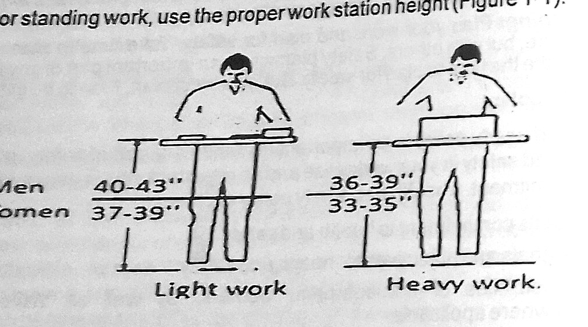
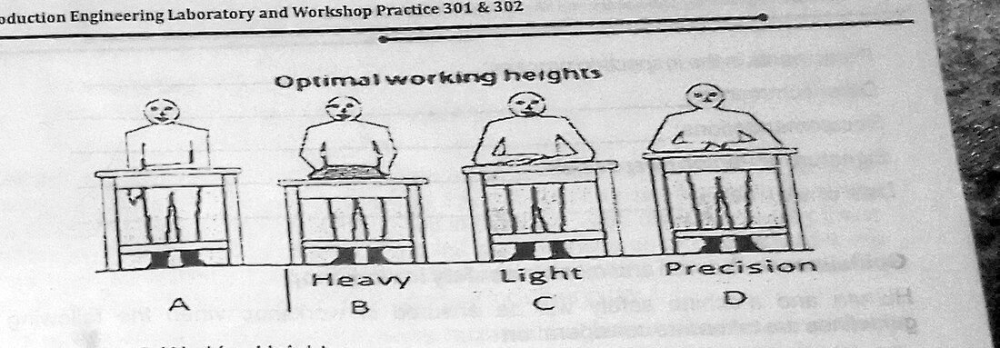

Section: Health and Safety · Code HSE 301
Health and Safety Management in Workplaces
A safety briefing rather than a bench experiment — but the one section on which every other experiment in this manual depends. It establishes the three-step approach to hazard control, the legal duties of each workplace partner, the ergonomics of manual handling, and the twenty-nine general shop rules that govern conduct in the workshop.
1 Aims
The aim of this section is to establish, before any tool is picked up, a working understanding of how safety is actually managed in an engineering workplace — not as a list of prohibitions, but as a deliberate, repeatable process of recognising hazards, evaluating the risk they carry, and controlling them at source. A second aim is to make clear that safety in the workshop is a shared legal duty, distributed across employer, employee, self-employed person and supervisor, so that a student entering industry knows where his own obligations begin and end.
2 Objectives
At the end of this unit the student should be able to:
- State and apply the three-step approach to safety at workplaces.
- Outline the purpose and scope of the workplace health and safety laws.
- Identify the workplace partners and describe the duty of care owed by each.
- Explain the four routes through which safety obligations are discharged.
- State what a written health and safety policy must contain.
- Understand work ergonomics and its application to manual handling.
- Apply the guidelines for hand work and for optimal working height.
- Apply the guidelines for human and machine safety in the workshop.
- Describe the measures that ensure a safe work environment.
3 Apparatus
No measuring instrument is used in this unit. The “apparatus” is the protective equipment and documentation that the safety system depends on, all of which were inspected during the induction:
- Safety glasses, goggles and face shieldsMandatory in any shop area, whether working or not.
- Safety footwearFull-cover shoes; sandals are not permitted in any shop.
- Hand protectionSuitable gloves for hot, sharp-edged or glass items.
- Overalls / work clothingClose-fitting; long sleeves and long trousers for welding.
- Machine guards and shieldsFitted to every machine before it is operated.
- Chip brush, hook and scraperFor clearing swarf — never the bare hand.
- Fire extinguisher and first-aid boxLocated and checked at the start of every session.
- MSDS book and Safety Procedures NotebookKept by the safety cabinet for chemical work.
- Manual work handling checklistTable 1-1 of the manual, used with EHSM procedure 3.2.
4 Theory and Diagrams
4.1 What safety actually means
Safety, reduced to its simplest form, is a state of being at little or no risk of injury from a harmful external impact, inhalation or contact. The manual is careful to describe it as a holistic condition: it is not enough that a worker is objectively safe, he must also feel free from the prospect of being harmed, because a worker who is anxious about the machine he is standing in front of does not concentrate on the work. To be safe in any work environment you have to think about the nature of the job and plan ahead to avert the hazards associated with it.
There is an important asymmetry in safety work that is worth stating plainly, because it explains why the whole discipline is organised the way it is. In most engineering decisions there are gains and losses to be traded off. In safety, the consequences are only ever negative — nothing good happens as a result of an accident. Because the upside is always zero, the management of safety risk is directed entirely at prevention and mitigation of harm rather than at optimisation.
4.2 The three-step approach to safety at work
A person having control of a workplace, or control of access to it, must as far as practicable employ a three-step approach:
- Step 1 — Recognition. Identify the hazards to which a person at the workplace is likely to be exposed. This is the step most often skipped, and it is the one on which everything else depends: a hazard that has not been named cannot be assessed or controlled.
- Step 2 — Evaluation. Assess the risk of injury or harm to a person arising from each hazard identified in step 1. Evaluation converts a list of hazards into a ranked set of priorities, since resources are never sufficient to address everything at once.
- Step 3 — Control. Consider the means by which the risk may be reduced — by elimination first, then by engineering controls such as guards and interlocks, then by safe working procedures, and only last by personal protective equipment.
The manual attaches a blunt note to this model: it takes effort to recognise, evaluate and control hazards, and if you do not do so you may be injured or killed by machinery, electricity, electrical fires or falls. Used properly, the same three steps make you much safer.
4.3 Workplace health and safety law
The aim of the Workplace Health and Safety Act 1995 is to prevent death, injury or illness caused by a workplace, by a relevant workplace area, by work activities, or by plant and substances used at a workplace. Improving health and safety reduces both the human and the financial cost of injury and disease, and the benefit accrues not only to workers but to their families, to employers and to the wider community. The Act sets out the law on health and safety, the procedures and activities guidelines for all relevant workplace areas, and the safeguarding of workers, machinery and substances for use at workplaces.
4.4 Workplace partners and their duties
The law places a specific duty of care on every human element in the chain, and these are what the manual calls the workplace partners:
- Employers provide work or employment in the form of hire, full employment or contract. The employer shall, as far as practicable, provide and maintain a safe working environment in which his employees are not exposed to hazards.
- Employees are on the payroll and are co-opted to render services towards the employer's objective. An employee shall take reasonable care to ensure his own safety and health at work, and to avoid adversely affecting the safety and health of any other person through any act or omission.
- Self-employed persons are simultaneously job provider and employee. Such a person shall take reasonable care of his own safety and health and, as far as practicable, ensure that the safety of a person who is not his employee is not adversely affected by the work in which he or his employees are engaged.
- Supervisors are employees with special skill and mastery, required to give expert direction on efficient job delivery. A supervisor shall take such measures as are practicable to ensure that the workplace, and the means of access to and egress from it, are such that persons at the workplace are not exposed to hazards.
A single person can hold more than one set of obligations at once — the manual gives the example of a sole proprietor who is both employer and principal contractor within the same workplace — and in that case all the obligations under the Acts must be met simultaneously.
4.5 How safety obligations are discharged
- Regulations. Issue regulations that either prohibit exposure to a risk or prescribe ways to prevent or minimise exposure; compliance is then mandatory.
- Codes of practice. A code of practice gives practical advice on managing exposure to risks identified as typical of the workplace. You must either follow the code or adopt another way that offers at least the same protection. The Tractor Code 1995 is the example cited.
- Where there is neither regulation nor code. You may meet the obligation by choosing any appropriate way to minimise exposure, taking reasonable precautions and exercising proper diligence to make sure the risk is managed. The formal risk management process is then undertaken to identify hazards and determine control measures, and is documented in a risk management code of practice.
- Safety planning. Plan your work and plan for safety — not alone, but with others. The manual is emphatic here: it is hard to take the time to plan for safety, but you must plan. Plan to be safe.
Underpinning all four is the written health and safety policy, which documents the employer's commitment to health and safety, the overall goals and objectives, and the responsibilities of management, workers, visitors and contractors.
4.6 Work ergonomics
Ergonomics is the involvement of human factors in satisfactory work or job delivery, and the design of systems that maximise the safety, comfort and efficiency of the people who use them. It is not restricted to manual handling: it applies equally to automated tool and machine handling.
Manual handling covers any activity requiring a person to lift, lower, push, pull, hold or carry an object, animal or person. Because lifting and lowering heavy loads carries health consequences, six ergonomic considerations are assessed:
- Moderating the extent of the weight being lifted — matching the load to body weight.
- Studying body posture and improving body layout while carrying.
- Regulating work frequency and duration of operation, under both long and short loads.
- Studying the physical and material characteristics of the object being handled.
- Considering individual physical, physiological, psychological and mental fitness.
- Ensuring the physical and operating environment is favourable to human effectiveness.
4.7 Guidelines for hand work and working height
Four guidelines have been scientifically proved to influence the effectiveness of hand-work operations: avoid placing needed tools or items above shoulder height; position frequently used items within 17 inches (430 mm) of the worker; use the proper workstation height for standing work; and set the working height from the worker's own body dimensions.

Optimal working height (OWH) is referenced to elbow height, measured with the upper arms hanging in a neutral position. For heavy work the OWH lies between elbow and waist height; for light work it is approximately at elbow height; and for precision work it is about 5 cm (2 inches) above elbow height, so that the hands are brought closer to the eyes without the worker stooping.

Three further rules complete the set. Sitting while working reduces strain on the lower back and legs, and standing still causes the legs to swell more than walking does — so the best jobs are those that let the worker alternate between sitting, standing and walking. Where movements are repeated over and over, as in picking from a production line or weeding with a hoe, enough time must be allowed between strokes for recovery, ideally by alternating the high-repetition task with a low-repetition one. Finally, foot and knee clearance must be provided for both standing and sitting workers so that they can get close to the work.
4.8 Human and machine safety in the workshop
Seven guidelines govern the interaction of people and machines: identify all hazards associated with the machine's use; assess the risks to all persons exposed; eliminate or reduce hazards by design features and guards wherever possible; apply safe standard working practices and take no unnecessary risks; consider the interaction between people and machine, including ergonomic factors in the risk assessment; consult the parties involved when change, relocation or new machinery is being considered; and assess the working environment — lighting, noise, temperature and general housekeeping.
The manual makes a point here that is easy to pass over but is the heart of the whole section: most machinery injuries are not caused by machine malfunction or breakdown, but by carelessness in usage. Accidents do not simply happen — they are caused, and no accident happens until there is an error, whether machine error, human error or environmental uncertainty. Injuries occur when workers are not paying close attention to work, when the operator loses concentration or forgets something, when he takes a risk or ignores a warning, and when he fails to follow safety rules.
Even so, no amount of care by the manufacturer removes every hazard. Machines can still cut, crush, draw in, or strike the operator with a thrown object, and a worker can be injured by falling while working on or near them. The consequences run from a “nuisance” injury that merely slows work down, through injury requiring hospitalisation and dismemberment, to death.
4.9 Ensuring a safe work environment
Employers have a duty to minimise the risk of injury by ensuring a safe work environment through induction training and re-training. Supervisors, existing workers and newly employed workers should be formally trained or retrained so that they have the requisite knowledge to apply safe practices to the machinery in their pool — a requirement that matters most for new employees and inexperienced people under training. Training should cover machinery safety procedures including emergency procedures; the correct and safe way of operating machinery; recognition of possible dangers in and around the workshop; the purpose and function of safety; fault reporting and troubleshooting, particularly detection of guard defects; the importance of wearing and caring for PPE; good housekeeping and safe workstation management; and any other statutory requirements.
5 Table of Values
The two sets of tabulated values given in this section of the manual are the recommended workstation heights and the manual work handling checklist.
| Type of work | Men (in) | Women (in) | Reference to elbow height |
|---|---|---|---|
| Light work | 40 – 43 | 37 – 39 | Approximately at elbow height |
| Heavy work | 36 – 39 | 33 – 35 | Between elbow and waist height |
| Precision work | elbow height + 5 cm (2 in) | Above elbow height | |
| S/N | Question | Response |
|---|---|---|
| 1 | Operations are assessed using the manual handling checklist provided in the EHSM | Y / N / NA |
| 2 | Often-used items are within easy access, between knee and shoulder | Y / N / NA |
| 3 | Heavy items stored at waist height | Y / N / NA |
| 4 | Step-ladders or stools are used to access items stored on high shelves | Y / N / NA |
| 5 | Repetitive operations minimised | Y / N / NA |
| 6 | Regular rest breaks are taken | Y / N / NA |
| 7 | Trolleys are available and used to transport items | Y / N / NA |
The checklist is completed against a named workshop building, department and location, signed by the inspector and by the person responsible, and carries a date of next review together with the names of participants in the inspection process, other comments and recommendations.
6 Procedure
- The class assembled in the workshop and the instructor took a roll call before anyone was allowed past the shop boundary line.
- Personal protective equipment was checked individually — safety glasses, full-cover footwear and overalls. Students in sandals were turned back, in line with rule 2 of the general shop safety rules.
- The three-step approach was explained and then applied as an exercise: for each work area in turn (wood shop, sheet metal bay, welding booth, machine shop and foundry), we listed the hazards we could see, ranked them by the severity and likelihood of harm, and proposed a control.
- The positions of the fire extinguishers, first-aid box, safety cabinet, MSDS book, Safety Procedures Notebook and emergency exits were pointed out and we were made to walk the escape route.
- The twenty-nine general shop safety rules were read out and discussed, with the instructor drawing attention to the ones that are most often broken — removing chips by hand, wearing gloves near rotating machinery, and working in a hurry.
- Working height was demonstrated. Elbow height was measured on two volunteers with the upper arms in a neutral position, and bench heights for light, heavy and precision work were derived from it and compared with the values in Figure 1-1.
- Correct manual lifting technique was demonstrated and then practised on a moulding box, with attention to posture, load position and foot placement.
- The manual work handling checklist (Table 1-1) was completed for the workshop as an inspection exercise and the entries discussed.
- Finally, machine guards on the lathe and the bench grinder were inspected and the emergency stop on each machine was located and operated.
7 Precautions
The following are the general shop safety rules to be observed by all students using the workshop, as set out on pp. 10–11 of the manual:
- Safety glasses, cover goggles or face shields are required in any shop area, whether working or not.
- Shoes must be worn in any shop area; no one wearing sandals is allowed to enter. The minimum footwear must cover the entire foot.
- Do not operate any item of equipment unless you are familiar with its operation and have been authorised to operate it. Ask the area supervisor if in doubt.
- No work may be performed using power tools unless at least two people are in the shop area and can see each other.
- Avoid excessive use of compressed air to blow dirt or chips from machinery, to avoid scattering chips. Never use compressed air guns to clean clothing or hair, or aim them at another person.
- Report every injury to the shop supervisor, no matter how slight.
- Do not attempt to remove foreign objects from the eye or body. If chemicals get in the eyes, wash them for 15 minutes in an open flow of water before seeking medical treatment.
- Machines must be shut off when cleaning, repairing or oiling.
- Do not wear ties, loose clothing, jewellery or gloves around moving or rotating machinery.
- Long hair must be tied back or covered to keep it away from moving machinery.
- Hand protection in the form of suitable gloves should be used for handling hot objects, glass or sharp-edged items.
- Wear clothing appropriate to the job — no short-sleeved shirts or short trousers when welding.
- Do not work in the shop if tired, or in a hurry.
- Never indulge in horseplay in the shop areas.
- All machines must be operated with all required guards and shields in place.
- A brush, hook or special tool is preferred for removing chips and shavings from the work area. Never use the hands.
- Keep fingers clear of the point of operation by using push sticks, hooks or pliers. Never use a rag near moving machinery.
- A hard hammer should not be used to strike a hardened tool or machine part; use a soft-faced hammer.
- Practise cleanliness and orderliness in the shop areas.
- Keep the floor around machines clean, dry and free from trip hazards; do not allow chips to accumulate.
- Think through the entire job before starting.
- Do not drink alcoholic beverages before or during work in the machine shop area, and do not bring food or snacks into the shop.
- Do not rush or take chances; obey all safety rules.
- If you have not worked with a particular material before, check the hazardous material safety data sheets (MSDS) book for specific precautions.
- Follow all appropriate precautions when working with solvents, paints, adhesives or other chemicals, and use appropriate protective equipment.
- Safe procedures for most shop operations are described in the Health and Safety Procedures Notebook located by the safety cabinet.
- Check the power cords and plugs on portable tools for damage or fraying before using them.
- Always store oily rags in an approved metal container.
- Before starting a machine, always check for correct set-up, and check that the machine is clear by operating it manually where possible.
8 Discussion
What came through most strongly in this session is that the safety system described in the manual is a process, not a set of slogans. The three-step model — recognition, evaluation, control — is deliberately sequential, and each step fails silently if the one before it is skipped. A hazard walk through the machine shop demonstrates this. The hazards that get named first are always the obvious mechanical ones: an unguarded chuck, swarf on the floor, a trailing lead to the pedestal drill. It typically takes a second pass to identify the poor lighting over a bench, or a fire extinguisher obstructed by stacked stock. Both are exactly the kind of hazard that gets missed, and both are cheap to control once named.
The evaluation step proved to be the most difficult in practice, because it demands a judgement about both likelihood and severity, and students naturally rank hazards by how frightening they look rather than by how likely they are to cause harm. The unguarded rotating work looks dangerous and is dangerous; the wet patch by the door does not look dangerous but is statistically far more likely to injure someone. Ranking forces that comparison to be made explicitly.
The ergonomics content connects directly with the practical work of the rest of the term. Measuring elbow height on two people and comparing the derived bench heights with the tabulated values shows reasonable agreement, but it also makes clear why the table gives a range rather than a single figure — the difference between two adults of the same sex can easily exceed 60 mm. The rule that precision work sits about 5 cm above elbow height also explains something that is noticed long before it is understood: a marking-out bench that feels too low, so that everybody stoops over it while scribing. The consequence is a rounded back held for long periods, which is precisely the posture the manual warns against.
The claim that most machinery injuries arise from carelessness rather than machine failure deserves comment, because it is easy to read it as simply blaming the operator. Read in context, the point is more useful than that: it says that the marginal return on further machine design is lower than the marginal return on attention, training and procedure. That is why induction training, the buddy rule for power tools, and the habit of thinking a job through before starting are treated as engineering controls in their own right rather than as afterthoughts.
Finally, completing Table 1-1 as an inspection exercise showed how a checklist converts a vague instruction (“handle loads safely”) into seven specific, auditable questions with a yes/no/not-applicable answer. Where an item such as “heavy items stored at waist height” or “trolleys available and used” returns “No”, the result is a concrete, correctable finding rather than a vague misgiving. This is the practical value of documentation: it produces evidence that can be acted on and reviewed at a stated date, instead of opinions.
9 Conclusion
The safety induction achieved its objectives. The three-step approach of recognition, evaluation and control was understood and successfully applied to five distinct areas of the workshop, producing a ranked hazard list with a proposed control for each item. The statutory framework was covered, and the distinct duties of employer, employee, self-employed person and supervisor were identified, along with the four routes — regulations, codes of practice, reasonable-precaution risk management, and safety planning — by which those obligations are met.
On the ergonomic side, optimal working height was measured from elbow height and found to agree with the ranges tabulated in Figure 1-1, and the distinction between heavy, light and precision working heights was demonstrated on real benches. The twenty-nine general shop safety rules were read, discussed and thereafter adopted as standing precautions for every subsequent experiment in this course. It is concluded that safety in the workshop is a managed process resting on hazard recognition and on the discipline of the individual operator, and that the conditions for safe practical work in the departmental workshop were established.
Questions asked in the material
1. State and explain the three-step approach to safety at workplaces.
Recognition — identify the hazards to which a person at the workplace is likely to be exposed. Evaluation — assess the risk of injury or harm arising from each hazard identified. Control — consider and apply the means by which that risk may be reduced, working down the hierarchy from elimination, through engineering controls and safe systems of work, to personal protective equipment. The steps are sequential: an unrecognised hazard cannot be evaluated, and an unevaluated hazard cannot be sensibly prioritised for control.
2. Who are the workplace partners and what duty does each owe?
The employer, the employee, the self-employed person and the supervisor. The employer must, as far as practicable, provide and maintain a working environment in which employees are not exposed to hazards. The employee must take reasonable care for his own safety and health and must not adversely affect that of others by any act or omission. The self-employed person carries both sets of duties, and must additionally ensure that non-employees are not harmed by the work he or his employees carry out. The supervisor must take practicable measures to ensure that the workplace and its means of access and egress do not expose persons to hazards.
3. How can an employer meet his safety obligations under the Act?
Through four routes: by issuing regulations that prohibit exposure to a risk or prescribe how it is to be minimised; by following a code of practice, or adopting another method offering at least the same protection; where neither exists, by choosing any appropriate means to minimise exposure, taking reasonable precautions and exercising proper diligence, and documenting the process in a risk management code of practice; and by safety planning — planning the work and planning for safety, with others rather than alone.
4. What must a written health and safety policy explain?
Three things: the employer's commitment to health and safety; the overall goals and objectives for health and safety; and the responsibilities of management, of workers, and of visitors and contractors where applicable. The policy is the documentary evidence of management commitment and is a required step in demonstrating it.
5. Define work ergonomics and state the considerations that apply to manual handling.
Ergonomics is the involvement of human factors in satisfactory work or job delivery, and the design of systems to maximise the safety, comfort and efficiency of the people who use them; it applies to automated tool and machine handling as well as to manual work. For manual handling the six considerations are: moderating the weight lifted and matching it to body weight; studying and improving body posture during carrying; regulating work frequency and duration; studying the physical and material characteristics of the object; accounting for individual physical, physiological, psychological and mental fitness; and ensuring the physical and operating environment favours human effectiveness.
6. How is optimal working height determined, and what are the values for heavy, light and precision work?
Optimal working height (OWH) is based on the worker's own body dimensions and is referenced to elbow height, measured with the upper arms in a neutral hanging position. For heavy work the OWH lies between elbow height and waist height; for light work it is approximately at elbow height; for precision work it is about 5 cm (2 inches) above elbow height. As standing bench heights this gives 40–43″ (men) and 37–39″ (women) for light work, and 36–39″ and 33–35″ respectively for heavy work.
7. What are the consequences of human error in the workshop?
Accidents do not just happen, they are caused; no accident occurs until there is an error — machine, human or environmental. Injuries occur when a worker is not paying close attention, when the operator loses concentration or forgets something, when he accepts a risk or ignores a warning, and when he fails to follow safety rules. The resulting injuries range from a “nuisance” injury that only slows work and reduces productivity, through injury requiring hospitalisation and dismemberment, to death.
8. What areas should induction and training cover?
Machinery safety procedures including emergency procedures; the correct and safe way of operating machinery; knowledge and recognition of possible dangers within and around the workshop and machinery; the purpose and function of safety; fault reporting and troubleshooting, including detection of defects and malfunctions in machine parts and operation, especially guard defects; the importance of wearing and caring for PPE; good housekeeping and safe workstation management; and other statutory requirements.
What I learned
- That safety is a managed process with a defined sequence, not a collection of warnings — and that the recognition step is where most failures actually originate, because the hazards that get missed are the undramatic ones.
- That risk in safety work is one-sided: there is no upside to an accident, which is why the entire discipline is organised around prevention and mitigation rather than trade-off.
- That the duty of care is legally distributed, and that as a student now and an employee later I carry a personal statutory duty not only for my own safety but for the effect of my acts and omissions on everyone else in the shop.
- That working height is not a matter of preference. Setting a bench to the wrong height produces a sustained bad posture, and sustained bad posture is a slow injury rather than a sudden one.
- That standing still is worse for the legs than walking, and that the best task designs deliberately alternate sitting, standing and walking.
- That a checklist is an engineering tool: it converts a vague duty into specific auditable questions, and it produces a dated, signed record that can be reviewed.
- That the least obvious rules on the list are the ones most worth keeping — never clearing chips by hand, never wearing gloves near rotating machinery, and never working in a hurry.